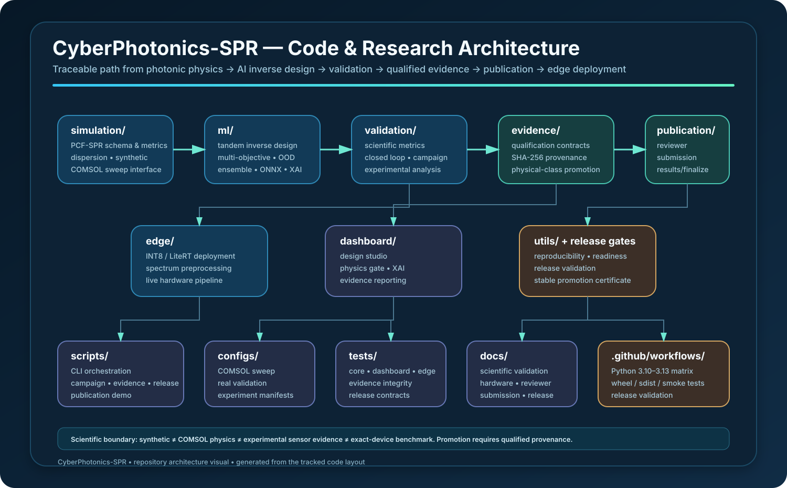

Inverse design
Conditioned tandem models, fabrication projection, calibrated confidence, OOD diagnostics, Pareto ranking, and ONNX export.
PCF-SPR · Physics-informed inverse design · Edge AI
CyberPhotonics-SPR is a publication-oriented research and engineering framework for photonic-crystal-fiber surface-plasmon-resonance sensors. It connects scientific simulation, tandem inverse design, uncertainty-aware optimization, numerical verification, real-time INT8 edge inference, hardware benchmarking, and evidence-qualified publication tooling.
Platform
The same backend powers CLI automation and the native desktop control center, preserving reproducibility while keeping day-to-day operation accessible.
Conditioned tandem models, fabrication projection, calibrated confidence, OOD diagnostics, Pareto ranking, and ONNX export.
Spectral denoising, refractive-index prediction, quantized TFLite/LiteRT inference, streaming metrics, and HIL benchmarking.
Responsive PySide6 desktop GUI with true white Light mode, deep-navy Dark mode, live status, training, pipeline, evidence, and report actions.
Reviewer packages, submission bundles, checksums, readiness gates, model/dataset cards, and explicit scientific-claim boundaries.
Architecture
Scientific computation, ML, deployment, evidence qualification, and release tooling are separated into explicit modules so results can be reproduced and audited.

Evidence boundary
The framework intentionally distinguishes what the software validates from what requires real numerical or experimental evidence.
Core algorithms, packaging, desktop UI, CI, reviewer tooling, edge interfaces, and evidence infrastructure can be validated without fabricated measurements.
Physical simulation claims require the actual model/configuration, unit contract, successful sweep points, and provenance hashes.
Laboratory and exact-device claims require raw measurements, protocol/calibration metadata, device identity, model identity, and acquisition provenance.
Quick start
git clone https://github.com/smshagor-dev/CyberPhotonics-SPR.git
cd CyberPhotonics-SPR
python -m venv .venv311
python -m pip install -e ".[dev,onnx]"
python -m sprpcf.runtime.doctor
python main.py